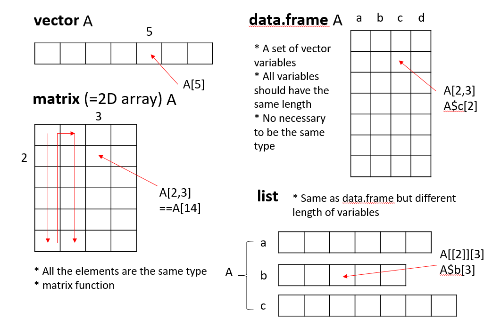

Chapter 3 R programming basics I
3.1 Terminology
- Session: R 언어 실행 환경
- Console: 명령어 입력하는 창
- Code: R 프로그래밍 변수/제어문 모음
- Objects (개체, variable): 데이터(값, value)가 저장되는 장소
- Object (variable) types:
- Vectors: 값들의 모임 combine function
c()EX: c(6, 11, 13, 31, 90, 92) - Factors: 범주형 데이터 저장 장소
- Data frames: 2D matrix 형태 데이터 자장 장소
- Vectors: 값들의 모임 combine function
- Data (value) types: Integers, doubles/numerics, logicals, and characters.
- Conditionals (조건, 제어):
if,==,&(AND),|(OR) Ex:(2 + 1 == 3) & (2 + 1 == 4)for,while: 반복 수
- Functions (함수, commands): 특정 일 수행, 함수이름 - 입력값 (arguments) - 출력값 (output) 으로 구성
3.2 R console script
콘솔에서 바로 계산을 수행할 수 있습니다. 참고로 이전에 수행한 명령은 콘솔에 커서가 있는 상태에서 위 아래 화살표를 누르면 볼 수 있고 엔터를 눌러 재사용 할 수 있습니다. ;을 사용하면 두 개의 명령을 동시에 수행할 수 있습니다.
\[ 2 + 2 \] \[ ((2 - 1)^2 + (1 - 3)^2)^{1/2} \]
3.3 What is a programming language


3.4 Variables and values
- R is a programming language
- Assignment operator (
<-OR=)- Valid object name
<-value - 단축키:
Alt + -(the minus sign)
- Valid object name
- 내장 변수 Built-in variables
- 변수이름 작명법
- Characters (letters), numbers, “_”, “.”
- A and a are different symbols
- Names are effectively unlimited in length
i_use_snake_case <- 1
otherPeopleUseCamelCase <- 2
some.people.use.periods <- 3
And_aFew.People_RENOUNCEconvention <- 4- 자동 완성 기능 (Tab completion) in RStudio
3.5 Object (variable) type of (storage) mode

3.6 Levels of measurement
- Nominal (명목형) – 사람 이름
- Ordinal (순서형) – 달리기 도착 순서
- Interval (구간형) – 선수1, 선수2 종점통과 시간
- Ratio (비율형) – 출발시간 기준 종점 통과 시간

- Numeric data types
- Discrete (이산형) data - 카운트, 횟수
- Continuous (연속형) data - 키, 몸무게, Cannot be shared
- Factors data - Categories to group the data
- Character data - Identifiers
- Date and time
3.7 Object - Vectors
vector는 R의 기본 데이터 구조입니다. numeric vector, logical vector, character vector 등 저장되는 값의 타입에 따라 크게 세가지로 나눌 수 있습니다. class() 함수를 이용해서 값의 타입을 알아낼 수 있습니다. Combine function인 c()를 활용하여 만들며 값을 순차적으로 붙여갈 수 있습니다.
x <- c(10.4, 5.6, 3.1, 6.4, 21.7)
class(x)
y <- c("X1", "Y2", "X3", "Y4")
class(y)
z <- c(T, F, F, T)
class(z)이 중 특히 numeric 형식의 벡터를 만드는 다양한 편의 함수들이 존재합니다.
1:5
seq(1,5, by=1)
seq(0, 100, by=10)
seq(0, 100, length.out=11)
?seq
rep(5, times=10)
rep(1:3, times=4)
rep(1:3, each=3)3.7.1 Exercise 3-1
odds라는 이름의 변수에 1부터 100까지의 홀수만을 저장하시오 (seq() 함수 사용)
3.7.2 Exercise 3-2
1, 2, 3, 4, 5 다섯 숫자에 대해서 두 개의 수를 뽑은 후 더해서 나올 수 있는 모든 수를 구하시오 즉, 1+1, 1+2, 1+3, …, 2+1, 2+2, …, 5+1, 5+2, …, 5+5 의 모든 경우에 대한 결과값을 구함 (rep() 함수 사용)
Logical 벡터는 True 또는 False를 원소로 갖는 벡터 입니다. 앞글자가 대분자로 시작하는 것을 기억하시고 T 또는 F와 같이 한 문자로 표현할 수도 있습니다. 특정 조건에 대한 판단 결과를 반환할 경우에도 논리값을 사용합니다. 이 경우 조건을 판단 후 인덱싱 방법으로 해당 값들을 뽑아내기도 합니다.
3.7.3 Exercise 3-3
1부터 100까지의 수를 n이라는 이름의 변수에 저장하고 이 중 짝수만을 뽑아내서 출력하시오 (which()함수 사용)
Character(문자형) 벡터의 경우 문자열을 다루는데 자주 쓰이는 paste() 함수의 사용법을 알아두면 편리합니다. paste() 함수는 서로 다른 문자열을 붙이는데 주로 사용됩니다. 참고로 문자열을 나누는 함수는 strsplit() 입니다. paste()에서 붙이는 문자 사이에 들어가는 문자를 지정하는 파라메터는 sep 이고 strsplit()함수에서 자르는 기준이 되는 문자는split 파라메터로 지정해 줍니다 (?split 또는 ?paste 확인).
paste("X", "Y", "Z", sep="_")
paste(c("Four","The"), c("Score","quick"), c("and","fox"), sep="_")
paste("X", 1:5, sep="")
paste(c("X","Y"), 1:10, sep="")
x <- c("X1", "Y2", "X3", "Y4", "X5")
paste(x[1], x[2])
paste(x[1], x[2], sep="")
paste(x, collapse="_")
strsplit("XYZ", split="")Factor형은 범주형데이터를 저장하기 위한 object 이며 R 언어에서 특별히 만들어져 사용되고 있습니다. factor() 함수를 이용해 생성하며 생성된 객체는 다음과 같이 level이라는 범주를 나타내는 특성값을 가지고 있습니다.
새로운 범주의 데이터를 추가할 경우 다음과 같이 해당되는 level을 먼저 추가하고 값을 저장해야 합니다.
factor는 기본적으로 level에 표시된 순서가 위치 (정렬) 순서입니다. 이를 바꾸기 위해서는 다음과 같이 levels 함수를 이용해서 순서를 바꿀 수 있습니다.
#library(UsingR)
str(Cars93)
x <- Cars93$Origin
plot(x)
levels(x) <- c("non-USA", "USA")
levels(x)
plot(x)vector 들은 다음과 같은 builtin 함수들을 사용해서 해당 변수의 attribute를 알아낼 수 있습니다. attribute에는 원소 이름, 타입, 길이 등 vector형 변수가 가질 수 있는 특성을 말합니다.
head(precip)
class(precip)
length(precip)
names(precip)
test_scores <- c(100, 90, 80)
names(test_scores) <- c("Alice", "Bob", "Shirley")
test_scores인덱싱은 vector 데이터의 일부 데이터를 참조할 때 사용하는 방법입니다.
3.8 Object - matrix
매트릭스는 2차원 행렬로 같은 형식의 데이터 값 (numberic, character, logical) 으로만 채워진 행렬을 말합니다. 메트릭스를 만드는 방법은 아래와 같으며 nrow 와 ncol 파라메터에 행과 열의 수를 넣고 각 셀에 들어갈 값은 가장 앞에 위치한 data 파라메터에 넣어 줍니다 (?matrix로 파라메터 이름 확인). 메트릭스 인덱싱은 메트릭스 안의 값을 저장하거나 참조할때 (빼올때) 사용하는 방법입니다. 메트릭스 변수이름 바로 뒤에 대괄호를 이용해서 제어를 하며 대괄호 안에 콤마로 구분된 앞쪽은 row, 뒷쪽은 column 인덱스를 나타냅니다.
mymat <- matrix(0, nrow=100, ncol=3) # 1
mymat[,1] <- 1:100 # 2
mymat[,2] <- seq(1,200,2) # 3
mymat[,3] <- seq(2,200,2) # 4매트릭스의 row나 column에 이름이 주어져 있을 경우 이름을 따옴표(")로 묶은 후 참조가 가능합니다. row나 column의 이름은 rownames() 또는 colnames()로 생성하거나 변경할 수 있습니다. row나 column의 개수는 nrow() 또는 ncol() 함수를 사용합니다.
colnames(mymat)
colnames(mymat) <- c("A", "B", "C")
colnames(mymat)
colnames(mymat)[2] <- "D"
colnames(mymat)
rownames(mymat) <- paste("No", 1:nrow(mymat), sep="")
rownames(mymat)여러 row나 column을 참조할 경우 아래와 같이 combine 함수를 사용하여 묶어줘야 하며 스칼라값을 (임의의 숫자 하나) 더하거나 뺄 경우 vector / matrix 연산을 기본으로 수행합니다.
3.8.1 Exercise 3-4
column이 3개이고 row가 3인 0으로 채워진 m이라는 이름의 matrix를 만들고 m의 각 원소를 1로 채우시오.
3.9 Object - data.frame
데이터프레임은 형태는 매트릭스와 같으나 컬럼 하나가 하나의 변수로서 각 변수들이 다른 모드의 값을 저장할 수 있다는 차이가 있습니다. $ 기호를 이용하여 각 구성 변수를 참조할 수 있습니다. 컬럼 한 줄이 하나의 변수 이므로 새로운 변수도 컬럼 형태로 붙여 넣을 수 있습니다. 즉, 각 row는 샘플을 나타내고 각 column은 변수를 나타내며 각 변수들이 갖는 샘플의 개수 (row의 길이, vector 의 길이)는 같아야 합니다. R 기반의 데이터 분석에서는 가장 선호되는 데이터 타입이라고 볼 수 있습니다.
## data.frame
ids <- 1:10
ids
idnames <- paste("Name", ids, sep="")
idnames
students <- data.frame(ids, idnames)
students
class(students$ids)
class(students$idnames)
students$idnames
str(students)
students <- data.frame(ids, idnames, stringsAsFactors = F)
class(students$idnames)
students$idnames
students[1,]
str(students)데이터프레임에서도 변수 이름으로 인덱싱이 가능합니다.
3.10 Object - list
리스트는 변수들의 모임이라는 점에서 데이터프레임과 같으나 구성 변수들의 길이가 모두 같아야 하는 데이터프레임과는 달리 다른 길이의 변수를 모아둘 수 있는 점이 다릅니다. 즉, R언어에서 두 변수를 담을 수 있는 데이터 타입은 list와 data frame 두 종류가 있는데 list 변수 타입은 vector 형태의 여러개의 element를 가질 수 있으며 각 vector의 길이가 모두 달라도 됩니다. list의 인덱싱에서 [ ]는 리스트를 반환하고 [[ ]]는 vector element들을 반환합니다.

## list
parent_names <- c("Fred", "Mary")
number_of_children <- 2
child_ages <- c(4, 7, 9)
data.frame(parent_names, number_of_children, child_ages)
lst <- list(parent_names, number_of_children, child_ages)
lst[1]
lst[[1]]
class(lst[1])
class(lst[[1]])
lst[[1]][1]
lst[[1]][c(1,2)]
3.11 Missing values
특정 값이 “Not available” 이거나 “Missing value” 일 경우 벡터의 해당 원소 자리에 데이터의 이상을 알리기 위해 NA를 사용합니다. 따라서 일반적인 연산에서 NA가 포함되어 있는 경우 데이터의 불완전성을 알리기 위해 연산의 결과는 NA가 됩니다. is.na() 함수는 해당 변수에 NA 값이 있는지를 검사해주는 함수이며 R에는 이 외에도 다음과 같은 특수 값들이 사용되고 있습니다.
- NA: Not available, The value is missing
- NULL: a reserved value
- NaN: Not a number (0/0)
- Inf: (1/0)
3.12 Useful functions I
다음은 벡터형 변수와 같이 쓰이는 유용한 함수들입니다.
z <- sample(1:10, 100, T)
head(z)
sort(z)
order(z)
table(z)
p <- z/sum(z)
round(p, digits=1)
digits <- as.character(z)
n <- as.numeric(digits)
d <- as.integer(digits)3.12.1 Exercise 3-5
- score 라는 변수에 1부터 100까지 중 랜덤하게 선택된 20개의 수로 10 x 2 matrix를 만드시오
- score의 row 이름을 문자형으로 Name1, Name2, …, Name10으로 지정하시오 (
paste()변수 사용) - score의 column 이름을 문자형으로 math와 eng로 지정하시오
- 이 matrix의 첫번째 컬럼과 두 번째 컬럼의 수를 각각 더한 후 total_score라는 변수에 저장 하시오
- total_score 오름차순 순서를 나타내는 인덱스 (
order()함수 사용)를 o라는 변수에 저장 하시오 - score를 o순서로 재 배치 하고 score_ordered 변수에 저장 하시오

이 저작물은 크리에이티브 커먼즈 저작자표시-비영리-변경금지 4.0 국제 라이선스에 따라 이용할 수 있습니다.